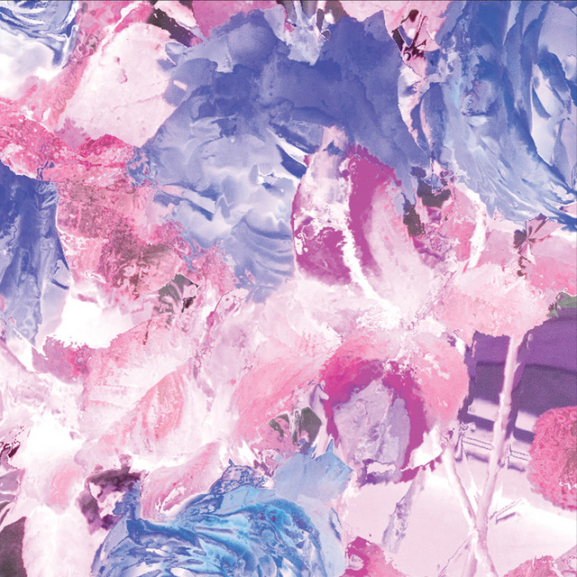

Long Island Sound - Lost Connection



Información del álbum facilitada por discogs.com:
Fecha de lanzamiento: 2010
Géneros: Electronic
Estilos: Trance, Progressive Trance
Pais: Spain
Votos: Media de 5.0 con 1 votos
Sello: Essential (3)
Vocals - Penny Stevens-Keller
Tracklist:
. A State Of Trance 2004 - CD 1
1-1. Tranquility (feat. Mark Otten) 7:10
1-2. Sahara (feat. Maurice Night & Nic Vegter & Rene Van Dijk & Yves La Verne) 5:48
1-3. Under The Sun (Solar Stone Remix) (feat. Filo & Peri & Solarstone & Bo Pericic & Domenick Filopei) 7:18
1-4. Signs From The Universe (feat. DJ Ton T.B. & Erik De Koning) 4:14
1-5. Ladyblue (Original Beat) (feat. L-Vee) 5:53
1-6. Velvet Morning (Aalto Remix) (feat. Aalto & Ralph Kyau & Steven Moebius Albert) 5:02
1-7. Escape (Phynn Mix) (feat. Phynn & Bart Van Wissen & Finne Jager) 5:36
1-8. Future Funland (Astura Remix) (feat. Astura & Armin van Buuren) 5:00
1-9. The Search For Freedom (feat. Fred Baker & M.I.K.E.) 6:01
1-10. Alba (feat. Miika Eloranta) 6:00
1-11. Satellite (Original Above & Beyond Mix) (feat. Above & Beyond & Above & Beyond & Jono Grant & Justine Suissa & Paavo Siljamäki & Tony McGuinness) 5:46
1-12. Spiral (feat. Robert Nickson) 6:54
1-13. Burned With Desire (Rising Star Mix) (feat. Rising Star & Armin van Buuren & Justine Suissa) 7:08
. A State Of Trance 2004 - CD 2
2-1. Kubik (feat. Perry O’Neil) 8:07
2-2. Flying (Sultan & The Greek Remix) (feat. Valentino Kanzyani & Sultan & The Greek & Denis Beganovich & Valentino Kanzyani) 5:37
2-3. The Ambience (feat. Michael Burns (3)) 4:35
2-4. Perfect Wave (feat. Peter Martin) 6:43
2-5. Mind Circles (Perry O’Neil Remix) (feat. Perry O’Neil & John Sims (2) & Perry O’Neil) 4:47
2-6. Fearless (feat. Remy Unger & Roland Klinkenberg) 5:43
2-7. Naked Angel (feat. Andy Bury & Rich Mowatt & Scott Bond) 6:07
2-8. Totally Fascinated (feat. M.I.K.E.) 6:19
2-9. Rise (feat. Jezper Söderlund) 5:38
2-10. Time To Say Goodbye (Passiva Mix) (feat. Passiva & Ashkan Fardost) 6:05
2-11. Forbidden Colours (feat. Perry O’Neil & Robert Nickson) 7:28
2-12. Offbeat (feat. Emiel R. Ten Hoor) 5:31
2-13. Introspection (John Askew Mix) (feat. Fred Baker & Terry Bones & Fred Baker & Mr. Sam & John Askew & Frédéric De Backer & Terry Bones) 5:06
. A State Of Trance 2005 - Light - CD 1
3-1. I Found You (feat. Mark Lewis & Michael Burns) 5:13
3-2. Wasting (feat. Ashley Tomberlin & Laurence Rapaccioli) 4:11
3-3. First Time (feat. Anita Kelsey & Anita Kelsey & Markus Schulz) 5:32
3-4. I Know You’re Gone (feat. Jessica Jacobs & Max Graham) 3:49
3-5. Space Guitar (feat. Mike Foyle) 4:50
3-6. In The End (feat. Galen Behr) 3:21
3-7. Ocean Rain (feat. Michael Targanski) 4:39
3-8. Aerospace (Probspot Remix) (feat. Probspot & Perry Van De Vrede) 5:42
3-9. Shivers (feat. Adrian Broekhuyse & Armin van Buuren & Raz Nitzan) 6:36
3-10. Beyond Horizon (feat. Randy Boyer & Eric Tadla) 5:42
3-11. Falling Anywhere (Rework) (feat. Ralph Kyau & Steven Moebius Albert) 4:02
3-12. Inertia (Armin Van Buuren Remix) (feat. Armin van Buuren & Stelios Vassiloudis & Vangelis Labrakis) 6:35
3-13. Call Of Tomorrow (John O’Callaghan Remix) (feat. John O’Callaghan & Sophie Sugar) 4:35
3-14. Cosmicstring (feat. Mark Dearden) 6:14
3-15. Mood Swing (feat. John Askew) 4:31
. A State Of Trance 2005 - Dark - CD 2
4-1. Simply Blue (feat. Peter Martin) 5:44
4-2. 808 (feat. NUfrequency & Alessandro Ripamonti & Cristiano Massera & Daniele Contrini) 2:33
4-3. Halcyon (feat. Danu Lucas & Andy Moor) 3:57
4-4. Why (Derek Howell Mix) (feat. Derek Howell & Ahmet Ertenu) 2:36
4-5. Papel (Preach Remix) (feat. DJ Preach & Oliver Lieb) 3:23
4-6. Crackdown (feat. Remy Unger) 3:01
4-7. Arcadia (feat. Dave Dresden & Josh Gabriel) 5:17
4-8. Twelve (Max Graham Remix) (feat. Max Graham & Andy Moor & Michael Park) 3:22
4-9. The Deep Show (feat. Hendrik Van Duivenbooden & Matthew Dekay & Robert Vreken) 4:34
4-10. Emotional Void (feat. Espen Gulbrandsen & Espen Gulbrandsen & Thomas Nøkling) 4:40
4-11. Ballerina (feat. Adam White & Adam White & Andy Ross & Martin Grech) 5:28
4-12. Perfect Silence (E-Craig 212 Vocal Mix) (feat. E-Craig & Andy Kaufhold & Bobolina & Jaspa Jones & Piet Blank) 4:40
4-13. Made Of Sun (KvA Hard Dub - AvB Edit) (feat. Kyau & Albert & Armin van Buuren & Steven Moebius Albert & Ralph Kyau & Steven Moebius Albert) 6:49
4-14. Massive Motion (feat. M.I.K.E.) 4:40
4-15. Bad Deal (feat. Matti Laamanen) 3:56
4-16. Language (Santiago Nino Dub Tech Mix) (feat. Santiago Niño & Andrew Bennett & Christian Scharnweber & Mario Hammer) 5:58
4-17. Ancient Space (Fred Baker Remix) (feat. Fred Baker & M.I.K.E.) 5:35
. A State Of Trance 2006 - On The Beach - CD 1
5-1. Shipwrecked (John O’Callaghan vs Mike Foyle Club Mix - AvB Intro Edit) (feat. John O’Callaghan & Mike Foyle & Armin van Buuren & Mike Foyle) 7:38
5-2. White Sand (DJ Shah’s Original Mix) (feat. DJ Shah & Jörg Stenzel & Roger P. Shah) 5:30
5-3. No Need To Come Back (Vocal Mix) (feat. Elsa Hill & Leon Bolier) 4:40
5-4. Timeless (Digifruitella Dub) (feat. Hendrik Van Duivenbooden & Matthew Dekay & Robert Vreken) 4:09
5-5. Your Loving Arms (Club Mix) (feat. Billie Ray Martin & David Harrow) 6:20
5-6. Beautiful (Glimpse Of Heaven) (Long Island Dub) (feat. DJ Shah & Jan Johnston & Roger P. Shah) 5:07
5-7. Dilruba (Junkie XL Remix) (feat. Junkie XL & Azam Ali & Carmen Rizzo & Loga Ramin Torkian) 6:15
5-8. Small Step To The Other Side (Elevation Remix) (feat. Elevation (3) & Arthur Schmidt (2) & Gabriel Lukosz) 5:17
5-9. Edge Of Space (Whiteroom Remix) (feat. Whiteroom & Bex Hazard & Cat Llewelyn) 6:31
5-10. Cold Drink, Hot Girl (feat. Jody Wisternoff) 6:24
5-11. One With Sanctuary (feat. Jani Rantanen) 4:23
5-12. My All (Flashbrothers Remix) (feat. Jose Amnesia & Shawn Mitiska) 4:25
5-13. For You (Outro Edit) (feat. Ashkan Fardost) 6:54
. A State Of Trance 2006 - In The Club - CD 2
6-1. Arisen (feat. Laurence Rapaccioli) 8:21
6-2. Above (feat. Fabrice Ernst & Jonas Steur) 5:38
6-3. Exactly (feat. Bryan Kearney & John O’Callaghan) 4:38
6-4. Walk Down (KvA Club Mix) (feat. Kyau & Albert & Steven Moebius Albert & Ralph Kyau & Steven Moebius Albert) 3:39
6-5. Dream Makers (feat. John Steven & Yiannis Hadjicharalambous) 4:24
6-6. Voices From The Inside (M.I.K.E.’s Progressiva Mix) (feat. M.I.K.E.) 4:24
6-7. Red Woods (feat. Ørjan Nilsen) 4:24
6-8. Kiksu (feat. Ralph Kyau & Steven Moebius Albert) 1:58
6-9. Transmigration (feat. Hiroyuki Oda) 4:55
6-10. Captured (Sebastian Brandt Remix) (feat. Sebastian Brandt & Marcus Schössow & Ron Hagen & Pascal M. & Sebastian Brandt) 4:31
6-11. World Gone Mad (feat. John O’Callaghan & Kevin McKinney) 2:59
6-12. Venus (feat. Henry Nix & Matthias Gierth) 5:34
6-13. Control Freak (Sander van Doorn Remix) (feat. Sander van Doorn & Armin van Buuren) 4:35
6-14. Shadow World (feat. Thomas Bronzwaer) 3:26
6-15. Until Monday (feat. Giuseppe Ottaviani & Marc van Linden) 3:26
6-16. Sail (feat. Armin van Buuren) 7:34
. A State Of Trance 2007 - On The Beach - CD 1
7-1. Light The Skies (Retrobyte’s Classic Electrobounce Mix) (feat. Retrobyte & Jaren Cerf & Matt Cerf & Shawn Mitiska) 6:07
7-2. Carry Me Away (feat. Emma Hewitt & Chris Lake) 6:15
7-3. Together We Rise (feat. Ned Shepard & Ossama Al Sarraf) 6:00
7-4. Who Will Find Me (feat. Adrina Thorpe & Roger P. Shah) 9:15
7-5. Reasons To Forgive (feat. Kirsty Hawkshaw & Tenishia) 7:00
7-6. The Distance (feat. Mark Otten) 5:21
7-7. Wouldn’t Change A Thing (feat. Jose Amnesia & Jennifer Rene & Jose Amnesia) 5:17
7-8. In & Out (DJ Shah Rework) (feat. DJ Shah & Alexander Perls & Roger P. Shah) 7:01
7-9. Touch The Sun (Rank1 Remix) (feat. Alex Bartlett & Andy Guess & Rank 1 & Alessandro Po & Alessandro Talia & Fabio Carrara & Nadia Bonifacio & Oscar Cossali) 4:19
7-10. Kalopsia (feat. Lars-Christian Nyheim & Tore Vatle Jensen & Tore Vatle Jensen) 6:19
7-11. Always A Fool (feat. Ralph Kyau & Steven Moebius Albert) 6:12
7-12. Tremble (feat. Freek Geuze & Johan Vermeulen) 6:52
. A State Of Trance 2007 - In The Club - CD 2
8-1. Miserere (feat. Armin van Buuren) 2:20
8-2. Rush Hour (feat. Armin van Buuren) 7:49
8-3. Walk Away (Terry Ferminal Mix) (feat. Terry Ferminal & Mark Sherry & Mark Sinclair (2)) 4:14
8-4. Formentera What (Gareth Emery Remix) (feat. Gareth Emery & Albert Vorne) 4:35
8-5. Ascent (feat. Michael Dow) 4:53
8-6. Perspective (feat. Boy Hagemann) 4:13
8-7. The Space We Are (A Capella) (feat. Adrian Broekhuyse & Raz Nitzan & Ronski Speed & Rough Mullar) 2:35
8-8. I Am (feat. Kate Cameron & Rick Simmonds & Stephen Jones (2)) 5:47
8-9. Evergreen (feat. First State) 7:08
8-10. Firefly (feat. Mike Foyle) 4:10
8-11. What You Need (Nic Chagall’s Hard Dub) (feat. Nic Chagall & Claus Terhoeven & Ned Bigham & Richard Walters) 4:52
8-12. Anthem (feat. Bo Pericic & Domenick Filopei & Eric Lumiere) 4:01
8-13. Whatever (Aly & Fila Remix) (feat. Aly & Fila & Miguel Sassot & Simon Paul (2)) 3:58
8-14. Why (Aly & Fila Remix) (feat. Aly & Fila & Jahala & Jan Hallvard Larsen & Frode Kambo Nilsen) 5:07
8-15. Day Seven (feat. Sophie Sugar) 3:13
8-16. One More Night Out (feat. Sean Tyas) 6:10
. A State Of Trance 2008 - On The Beach - CD 1
9-1. Unforgivable (First State Remix) (feat. Armin van Buuren & Benno De Goeij & First State & Armin van Buuren & Benno De Goeij & Jaren Cerf) 6:22
9-2. Spring Breeze (Martin Roth SummerStyle Remix) (feat. Martin Roth & Christian Hirt & Tatana Sterba) 4:53
9-3. Bittersweet Nightshade (feat. Mike Foyle) 3:33
9-4. Amazon Dawn (feat. Mark Sixma) 4:09
9-5. Fake Awake (The Blizzard Remix) (feat. The Blizzard (2) & Andy Moor) 6:09
9-6. Punta Del Este (Beach Mix) (feat. Blake Jarrell) 3:25
9-7. Serendipity (feat. Benjamin Bording & Benjamin Bording & Penny Nixon) 4:46
9-8. Satori Waterfalls (feat. Boy Hagemann & Johan Groenewegen) 6:06
9-9. These Shoulders (Club Mix) (feat. Julie Thompson & Alan Nimmo & Andrew Bayer) 5:36
9-10. Vampire (feat. Myon & Shane 54 & Carrie Skipper & Előd Császár & Márió Égető) 6:46
9-11. Certainty (Mark Otten Dub) (feat. Adrian Broekhuyse & Julian Vincent & Paul Moelands & Raz Nitzan & Mark Otten & Adrian Broekhuyse & Cathy Burton & Paul Moelands & Raz Nitzan) 5:18
9-12. Burning From The Inside (Tenishia’s Burning Dub) (feat. Tenishia & Tenishia & Tenishia & Tiff Lacey) 5:59
9-13. Cygnes (feat. Andy Duguid & Claudio Pelissero & Mr. Sam) 5:55
9-14. Out Of The Sky (Kyau & Albert Remix) (feat. Lange & Kyau & Albert & Lange & Sarah Howells) 5:52
. A State Of Trance 2008 - In The Club - CD 2
10-1. Strangers We’ve Become (Intro Tech Dub) (feat. Arney Secerkadic & Arney Secerkadic & Jaren Cerf) 5:14
10-2. Lost (Club Mix) (feat. Roger P. Shah & Roger P. Shah & Zara Taylor) 7:13
10-3. For Your Love (Sied van Riel Remix) (feat. Offer Nissim & Sied van Riel & Offer Nissim Feat. Maya) 3:51
10-4. Lover Summer (Orjan Nilsen Remix) (feat. Ørjan Nilsen & Ilya Soloviev & Paul Miller (4)) 7:40
10-5. The New World (feat. Markus Schulz) 3:48
10-6. Rewire (feat. Daniel Kandi & Robert Nickson) 4:56
10-7. No More Alone (feat. Giuseppe Ottaviani) 3:58
10-8. The Last Time (Simon Bostock Remix) (feat. Steve Helstrip & Simon Bostock & Kathleen Fisher & Ron Wasserman & Steve Helstrip) 3:55
10-9. Blueprint (Club Mix) (feat. Henry Nix & Matthias Gierth) 5:55
10-10. Back To You (Aly & Fila Remix) (feat. DJ Shah & Aly & Fila & Adrina Thorpe & Roger P. Shah) 6:31
10-11. Time To Rest (Live Guitar By Eller Van Buuren) (feat. Eller van Buuren & Andrej Komatovic) 6:09
10-12. Certitude (feat. Thomas Bronzwaer) 3:43
10-13. The Return (feat. Arney Secerkadic) 6:02
10-14. Lost Connection (feat. Benno De Goeij & Jochen Miller & Benno De Goeij) 1:51
10-15. In And Out Of Love (Richard Durand Remix) (feat. Armin van Buuren & Benno De Goeij & Richard Durand & Armin van Buuren & Benno De Goeij & Sharon den Adel) 4:02
. A State Of Trance 2009 - On The Beach - CD 1
11-1. Never Fade Away (Andy Duguid Mix - On The Beach Intro Edit) (feat. Cathy Courtney & John O’Callaghan & Andy Duguid & Heather Pollock & Briss & Heather Pollock & John O’Callaghan) 6:01
11-2. Change Your Mind (Myon And Shane 54 Remix) (feat. Myon & Shane 54 & Kyler England & Roger P. Shah) 4:11
11-3. Paradise Lost (feat. Mark Sixma) 3:58
11-4. Riddles In The Sand (feat. Ron Hagen & Pascal M.) 4:18
11-5. The Fractal Universe (feat. Matan Zohar) 4:53
11-6. Iselilja (Sunn Jellie & The Blizzard Dub Remix) (feat. Lars-Christian Nyheim & Tore Vatle Jensen & Sunn Jellie & The Blizzard (2) & Gunnhild E. Sundli & Gåte & Traditional) 5:06
11-7. Miami Vibe (Omnia Remix) (feat. Omnia (2) & Peter Smit) 5:06
11-8. Deep Down (feat. Josh Gabriel & Meredith Call) 6:47
11-9. Helpless (Monster Mix) (feat. Aruna & Előd Császár & Márió Égető) 4:24
11-10. You Walk Away (feat. Audrey Gallagher & Tyson Illingworth) 5:02
11-11. Faces (feat. Meighan Nealon & Adrian Gariba & Andy Moor & Ashley Wallbridge) 5:52
11-12. Nothing At All 6:36
11-13. Shaguar (feat. Jerome Isma-Ae) 5:26
11-14. Man On The Run (Nic Chagall Remix) (feat. Nic Chagall & Eelke Kalberg & Jaren Cerf & Matt Cerf & Sebastiaan Molijn & Shawn Mitiska) 7:23
. A State Of Trance 2009 - In The Club - CD 2
12-1. Find Yourself (Cosmic Gate Remix) (feat. John O’Callaghan & Cosmic Gate & John O’Callaghan & Richard Llewellyn (2) & Sarah Howells) 6:34
12-2. Inside Of You (Cosmic Gate Remix) (feat. Cosmic Gate & Eros Ongari & Fabio Carrara & Gabrielle Boracchi & Luca Antolini DJ & Oscar Cossali & Riccardo Tesini) 5:34
12-3. Tuvan (feat. Armin van Buuren & Benno De Goeij) 5:41
12-4. Sivan (feat. Michael Tsukerman) 5:59
12-5. Onyric (Stoneface & Terminal Remix) (feat. Stoneface & Terminal & Matthias Baumann) 4:02
12-6. Freefalling (feat. Audrey Gallagher & Audrey Gallagher & Ben Lawton & Claudia Cazacu) 4:12
12-7. Rosaires (feat. Aly Amr Fathalah & Fadi Wassef Naguib) 5:08
12-8. Sunset Boulevard (feat. Adrian Broekhuyse & Raz Nitzan & Ana Criado & Alex M.O.R.P.H. & Dennis Schimonik & Timo Kollöchter) 5:08
12-9. Addicted (feat. Ron Hagen & Pascal M.) 4:12
12-10. Circles (Andy Blueman Remix - Live Guitar By Eller van Buuren) (feat. Eller van Buuren & Andy Blueman & Robert Nickson) 6:30
12-11. Aztec (feat. Polly Strange (2) & Dan Willis (3) & Greg Spencer & Jules Moyce) 5:32
12-12. Look Ahead (feat. Thomas Bronzwaer) 3:55
12-13. Come To Me (ASOT 2009 Reconstruction) (feat. Alexandru Tuduran) 4:31
12-14. Blade Runner (feat. Andreas Lindell) 3:46
12-15. Monsun (feat. Krzysztof Pretkiewicz) 5:49